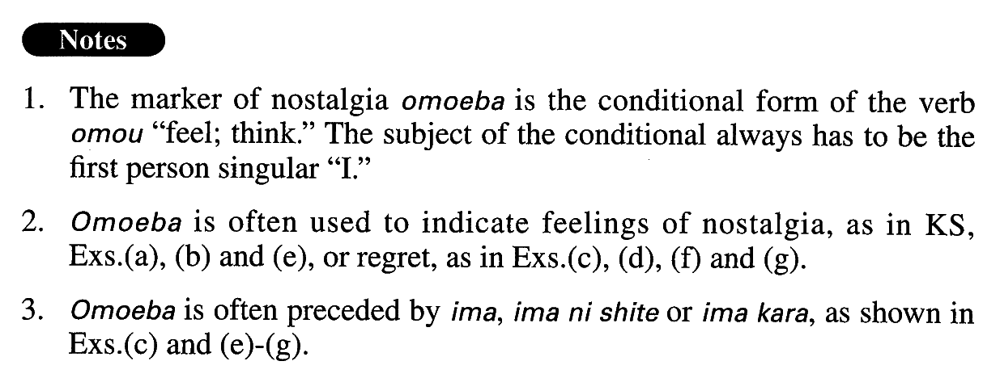

思えば (A. 492)
- (ks).
- 思えば、大学時代はとても楽しかった。
- When I come to think of it, I had a great time when I was in college.
- (a).
- 思えば、あの頃私は彼と政治問題について毎日のように議論したものだ。
- When I think back, I discussed political issues with him almost every day.
- (b).
- 思えば、終戦後数年は、ほとんどの日本人が野菜を庭で育てていた。
- Come to think of it, for a few years after the war, almost all Japanese people grew vegetables in their backyards.
- (c).
- 今思えばどうしてこんなCDを買ったのだろう。
- Now that I think about it, why did I buy such a (terrible) CD?
- (d).
- 思えば心筋梗塞の前兆はあった。
- Come to think of it, there were warning signs of a cardiac seizure.
- (e).
- 小学校3年生の時、祖母と銀座で映画を見た。今にして思えば、あれが祖母と見た最初で最後の映画だった。
- I saw a movie in Ginza with my grandmother when I was a third grader. When I think back on it now, that was the first and the last movie I ever saw with her.
- (f).
- 今から思えば、私が同僚の男性と結婚すると言った時、父は猛然と反対した。あの時父の忠告を聞いておけばと悔やまれる。
- As I think of it now, my father was vehemently opposed when I told him that I was going to marry my colleague. I regret that I didn't listen to his advice.
- (g).
- 自転車で出かけようとした途端、チェーンが外れてしまった。今から思えば、あれがケチのつき始めだった。
- The moment I went out on my bicycle, the chain came off. When I come to think of it now, that was the beginning of (a period of) bad luck.
